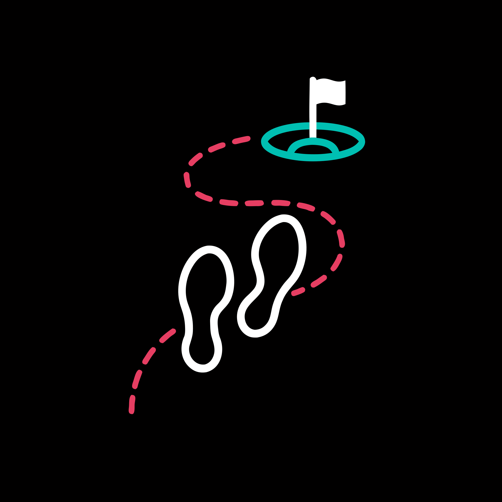

Which campaigns create real Tock reservations?
Separate clicks and checkout starts from completed bookings, then account for edits, transfers, cancellations, and refunds.
PUTTERY NYC · 446 W 14TH ST · PILOT VENUE
Reservation reporting and NYC analytics. Attribution is next.
The Tock reservation feed is connected. Inspect service-date trends, source coverage and data quality here, then track the remaining steps from a tagged booking to verified campaign revenue.
Reservation ingestion is connected. Tracking, attendance and booking-value definitions, consent, and remaining account access still gate attribution.
Loading the latest dated source check. Reservation aggregates are separate from attribution and revenue validation.
Loading dated ingestion and reconciliation evidence for NYC business 37824, group 28086.
Confirm a controlled tagged booking, consent and exact advertising account access.
Confirm attendance, booking-value and finance definitions before campaign revenue or media feedback.
Webhook health is engineering evidence. It does not prove completed visits, attributed revenue, or media conversions. Guest records stay outside this page.
Each handoff must preserve a stable identifier or move down to a clearly labeled aggregate result.
Google, Meta, organic, email, direct, or partner traffic enters through a governed Puttery link.
UTM · click ID · consent · landing pageBooking, party, status, value, cancellation, and service timing are recorded at reservation grain.
Reservation ID · business ID · transaction IDSeated, completed, no show, transferred, and refunded outcomes remain distinct.
Service status · completed time · coversNet sales, payments, refunds, tax, tips, and venue revenue centers close the operating loop.
Restaurant GUID · check GUID · payment GUIDDistinct latest reservation states from Tock exports and webhook updates. Choose a service period above; all dates use New York time.
Last 30 complete service days; today is excluded.
Reservation records are not completed visits or attributed ad conversions. Revenue reporting remains pending validation.
Reservation states per service day.
| Service date | Records |
|---|
Waiting for the selected period’s data-readiness counts.
Attendance detail stays in the protected source records.
All-history ingestion checks stay independent of the service-period selector.
Counts indicate recognized field names present on selected records. They do not prove usable values, consent, a campaign match or an attribution rate.
| Field name | Records with field |
|---|
Only field-presence and consistency counts are published. Revenue amounts stay pending until finance definitions, refunds and payment reconciliation are approved.
| Financial field | Records with field |
|---|
Selected-period counts and source timestamps only. Implementation notes export separately below.
GA4 activity stays separate from reservation outcomes and revenue.
Loading independently dated GA4 extract.
| Hostname | Channel | Page views | Users within row |
|---|
| Hostname | Event | Event count |
|---|
| Date YYYYMMDD | Hostname | Page views | Users within row |
|---|
Every chart, integration, and data request exists to support one of these decisions.
Separate clicks and checkout starts from completed bookings, then account for edits, transfers, cancellations, and refunds.

VISITKeep reservation creation and service completion as separate conversion events so paid media is not optimized toward future cancellations.
Report exact matches, platform-level outcomes, and unmatched value separately. Never turn a timing guess into a person-level match.
Tock booked value, Tripleseat event value, deposits, and Toast sales describe different financial facts. They are never added into one revenue total.
Ten source lanes support the pilot. The NYC reservation webhook and daily exports are connected. Financial reconciliation, campaign tracking and additional venue access still require confirmation.
Detail on account access and integration setup. Existing answers are preserved.
Saved notes stay in this browser.
No questions match these filters. Clear a filter to continue.
The easiest dashboard to understand is the one that refuses to rename different financial facts as the same number.
The reservation reporting MVP includes a refreshing Tock feed and a separately dated NYC GA4 extract. Campaign attribution and validated revenue reporting remain pending.
Protected access, reservation webhooks, historical exports and automatic refresh are working.
Walk-in normalization verified · zero rows excludedSource timestamps, service-date filters, trends and downloads show verified Tock aggregates. GA4 activity is separately dated and scoped to NYC.
Attribution validation remains pendingVerify the exact analytics and ad accounts, consent and one tagged booking from campaign to reservation.
Needs access and end-to-end proofConnect the approved revenue sources, agree attendance and financial definitions, then reconcile before calculating ROAS.
Needs source access and approved definitionsAdvertising account access, one controlled test booking, and agreed definitions for booking value and revenue. Those three unlock end to end attribution.
Validate website tags, consent, GA4 and the exact advertising accounts, then trace a controlled booking into the reservation feed. Confirm the finance definition before publishing revenue or ROAS.
Provide access to the exact Puttery Meta Business, ad account, Pixel or Dataset and verified domain, or identify the administrator who can.
Identify the admins for the website or CMS, GTM publish, GA4 Editor, Google Ads, Tripleseat and Toast or CRM. Supply two known venue days for reconciliation.
After access is verified, run the tagged-booking proof through website, analytics and Tock; validate campaign-field preservation and keep the reporting pipeline operating.
Name the privacy and finance decision owners, then approve consent, attendance, booking-value and revenue definitions before attribution or media feedback.